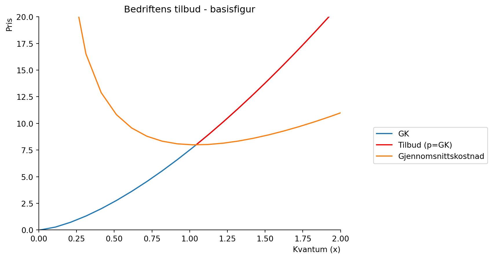
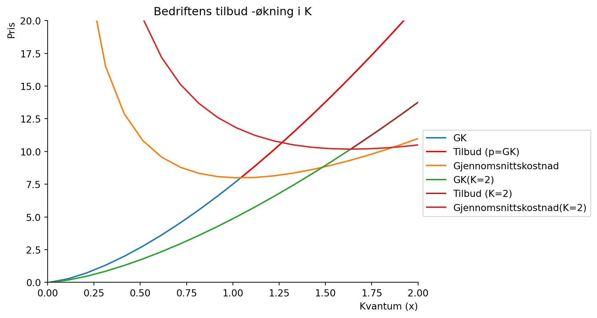

Code
import numpy as np
from matplotlib import pyplot as plt
import sympy as spFor å gå tilbake til hovedsiden trykker du her.
Oppgave 7
En bedrift produserer en vare med produktfunksjon \(x = N^{\frac{2}{5}}K^{\frac{1}{4}}\) (som i Eksempel 2.1). Vis i en figur hvordan tilbudskurven endres når (i) \(K\) økes, (ii) \(w\) økes og (iii) \(r\) økes. Forklar intuisjonen bak dine funn.
import numpy as np
from matplotlib import pyplot as plt
import sympy as spx,N,p,K = sp.symbols('x N p, K', positive=True, real=True)
def AC(x):
return Kostnad_fn(x)/x
def prod_ks(N):
return N**.4
# løs x=f(N)
N_ks = sp.solve(prod_ks(N)-x,N)[0]
N_ks
Kostnad=5+3*N_ks
GK = sp.diff(Kostnad, x)
AOB=sp.diff(GK,x)
Kostnad_fn=sp.lambdify(x, Kostnad)
GK_fn=sp.lambdify(x, GK)
# finn lavest x som gir positiv fortjeneste, dvs reservasjonsprisen
lavest_x=sp.solve(AC(x)-GK_fn(x),x)[0]
x_num=np.linspace(0.01,10,100)
x_1=np.linspace(float(lavest_x),10,100)
GK_fn=sp.lambdify(x, GK)
# Lager en basisfigur
def create_basis():
fig, ax = plt.subplots()
ax.set_ylabel('Pris', loc='top')
ax.set_xlabel('Kvantum (x)', loc='right')
ax.set(xlim=(0,2))
ax.set(ylim=(0,20))
ax.spines['top'].set_color('none')
ax.spines['right'].set_color('none')
ax.plot(x_num, GK_fn(x_num), label = 'GK')
ax.plot(x_1, GK_fn(x_1), color='red', label = 'Tilbud (p=GK)')
ax.plot(x_num, AC(x_num), label = 'Gjennomsnittskostnad')
return fig, ax
fig, ax = create_basis()
ax.set_title('Bedriftens tilbud - basisfigur')
ax.legend(loc='best', bbox_to_anchor=(1.5, 0.5));
x,N,p,K,w,r = sp.symbols('x N p K w r', positive=True, real=True)
def prod_ks(N,K):
return N**.4*K**.25
# løs x=f(N)
N_ks_2 = sp.solve(prod_ks(N,K)-x,N)[0]
# Her må man definere w og den andre variablen tror jeg
Kostnad_2=r*K+w*N_ks_2
# tilbudet gis av likning (3) p=GK
GK_2 = sp.diff(Kostnad_2,(x))
AOB_2=sp.diff(GK,x)# vi gjør klart for å plotte
Kostnad_fn_2=sp.lambdify((x,w,r,K), Kostnad_2)
GK_fn_2=sp.lambdify((x,w,r,K), GK_2)
display(Kostnad_fn_2(x,w,r,K))
display(GK_fn_2(x,w,r,K))\(\displaystyle \frac{w x^{2.5}}{K^{0.625}} + K r\)
\(\displaystyle \frac{2.5 w x^{1.5}}{K^{0.625}}\)
def AC_2(x,w,r,K):
return Kostnad_fn_2(x,w,r,K)/x
# finn lavest x som gir positiv fortjeneste, dvs reservasjonsprisen
break_even=sp.solve(AC_2(x,w,r,K)-GK_fn_2(x,w,r,K),x)[2]break_even_fn = sp.lambdify((w,r,K),break_even)# utgangspunkt var K=1, w=3, r=5
x_k= np.linspace(float(break_even_fn(3,5,2)),10,100)
fig, ax = create_basis()
# nytt utgangspunkt K=2, w=3, r=5
ax.plot(x_num, GK_fn_2(x_num,3,2,2), label = 'GK(K=2)')
ax.plot(x_k, GK_fn_2(x_k,3,2,2), color='brown', label = 'Tilbud (K=2)')
ax.plot(x_num, AC_2(x_num,3,5,2), label = 'Gjennomsnittskostnad(K=2)')
ax.set_title('Bedriftens tilbud -økning i K')
ax.legend(bbox_to_anchor=(1, 0.6));
Økning i K: Grensekostnaden blir lavere for økt kvantum produsert. Dette er fordi økt kapital gir økt produksjon.
x_k= np.linspace(float(break_even_fn(3,6,1)),10,100)
fig, ax = create_basis()
# nytt utgangspunkt K=1, w=3, r=5
ax.plot(x_num, GK_fn_2(x_num,3,6,1), label = 'GK(r=6)')
ax.plot(x_k, GK_fn_2(x_k,3,6,1), color='brown', label = 'Tilbud (r=6)')
ax.plot(x_num, AC_2(x_num,3,6,1), label = 'Gjennomsnittskostnad(r=6)')
ax.set_title('Bedriftens tilbud -økning i r')
ax.legend(bbox_to_anchor=(1, 0.6));Økning i r: gjennomsnittskostnaden øker fordi økt rente gir økt kapitalpris.
x_k= np.linspace(float(break_even_fn(4,5,1)),10,100)
fig, ax = create_basis()
# nytt utgangspunkt K=1, w=3, r=5
ax.plot(x_num, GK_fn_2(x_num,4,5,1), label = 'GK(w=4)')
ax.plot(x_k, GK_fn_2(x_k,4,6,1), color='brown', label = 'Tilbud (w=4)')
ax.plot(x_num, AC_2(x_num,4,5,1), label = 'Gjennomsnittskostnad(w=4)')
ax.set_title('Bedriftens tilbud -økning i w')
ax.legend(bbox_to_anchor=(1, 0.6));
Økning i w: Grensekostnaden og tilbudskurven øker fordi økt lønn gir økt arbeidskraftpris.
For å gå tilbake til hovedsiden trykker du her.